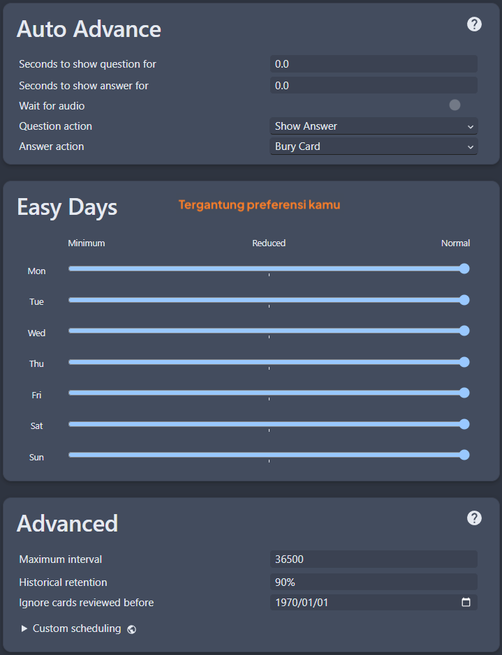

Panduan Ringkas Belajar Bahasa Jepang¶
Perhatian (klik di sini)
-
Panduan ini adalah terjemahan dari LazyGuide dengan beberapa pengubahan referensi dan lokalisasi sumber Bahasa Indonesia
-
Jika kamu bisa bahasa inggris, silakan kunjungi panduan di sana
-
Panduan super singkat buat ngelawan panduan lain yang isinya tembok teks dan link ke hal-hal berbayar yang sebenernya nggak perlu, apalagi buat pemula yang malah bikin makin bingung
-
Aku lulus JLPT N2 (2022) waktu nulis ini dan pendapatku masih sama sampai sekarang
Tips¶
5 Tips buat Pemula (klik di sini)
-
Konsisten dan fokus itu kuncinya, nggak ada trik lain yang beneran manjur -
Jangan bandingin dirimu sama orang lain, jangan nyerah, jangan percaya sama yang bilang bisa jago dalam waktu cepat -
Lakuin aja,
banyak orang malah lebih banyak mikir daripada beneran mulai, kamu nggak akan pernah siap kalau nggak mulai-mulai -
Waktu/Jumlah yang ditulis di sini nggak saklek, meskipun kamu butuh waktu 10x lebih lama atau lebih cepat dari yang aku tulis, itu cuma patokan dasar aja -
Nggak,
kamu nggak bodoh/terlalu tua, kalau kamu bisa belajar bahasa ibu kamu, kamu juga bisa belajar bahasa lain, bahkan burung beo aja bisa
Langkah-Langkah¶
-
Belajar
Kana; Hiragana(duluan) lalu Katakana(setelahnya)Pelajari 15 Kana baru per hari- Kamu bisa lewati penjelasan panjangnya, langsung ke bagian
mempelajari hurufnya - Langsung kerjain Kana Quiz
setiap kali udah belajar +5 kana, kasih jeda antar review, misalnya 15 menit / 30 menit / 1 jam / 8 jam - Harusnya selesai dalam waktu 2 minggu
-
Download Anki dan add-on Anki punyaku
- Extract (?)
Anki add-on-nya (Password:lazyguide) terus paste ke folder:- Windows:
C:\Users\YourUser\AppData\Roaming\Anki2 - Mac :
/Users/macbookair/Library/Application Support/Anki2/addons21
- Windows:
- Restart
Ankikamu
- Extract (?)
-
Download Kaishi.1.5k.apkg (
deck kosakata 1.5k) atau Kaishi 1.5k Indonesia Simplified.apkg terus buka filenya- Waktu ngerjain deck-nya, cukup pake tombol
again (1 = aku nggak tahu jawabannya)ataugood (spasi atau 3 = aku tahu jawabannya), jadi kamu nggak perlu mikir maueasy (2)atauhard (4)
- Waktu ngerjain deck-nya, cukup pake tombol
-
Masuk ke menu
Deck> klik ikon gear > salin pengaturannya di bawah- (Bar Menu - Kiri Atas)
Tools>Preferencesdan sesuaikan dengan pengaturan ini
Pengaturan Anki (klik di sini)




- (Bar Menu - Kiri Atas)
-
Kerjain
Deck Kosakata Kaishi 1.5k, mulai dengan10 kartu baru/hari(maksimal 30; jangan berlebihan) barengin juga denganpanduan grammardilangkah 6;- Kanji udah ada di deck ini; motonya adalah
belajar kosakata, bukan kanji terpisah
- Kanji udah ada di deck ini; motonya adalah
-
Pakai salah satu: Panduan Grammar Teks Tae Kim atau Panduan Grammar Video-nya Cure Dolly (Cukup 34 video pertama aja)
- Nggak, kamu nggak perlu sempurna kerjain quiz-nya,
bahkan bisa dilewatin - Yang penting itu
nangkep isi materinyaatau minimal tahu garis besarnya karenakamu bakal balik lagi ke situ ratusan kali nantinya - Untuk sumber belajar bunpou bahasa indonesia bisa cek sumber daya di discord
- Nggak, kamu nggak perlu sempurna kerjain quiz-nya,
-
Setelah selesai
Deck Kosakata Kaishi 1.5kdanPanduan Grammar TeksatauPanduan Grammar Video, sekarang kamu bisa mulaiminingdanmelakukan immersion beneran- Ini
biasanya butuh waktu 2-4 bulantergantung usaha kamu buat bisa mulai immersion
- Ini
-
Saat immersion kamu bisa cek cepat
poin grammardari DoJG (Pemula) dan Nihongokyoshi (Menengah+)Baca/tonton hal yang kamu suka, tapi cukup sampai level kesulitan sedang aja, atau 4-5/10 di jpdb, awalnya bakal berat banget, tapi lakuin aja
-
Buka Panduan Lazy Mining yang aku bikin buat setup gampang alat mining terbaru buat semua jenis media
- Mining = proses
bikin kartu dari mediayang kamu pakai buat immersion, tools-kubisa bikin mining cukup dengan sekali klik
- Mining = proses
Penutup¶
-
Ini
versi yang super disederhanakan, jadi emang nggak lengkap, langsung aja jalanin sambil belajar, kalau bingung bisa tanya di server-server Japanese Immersion atau cari aku di Discord -
Nggak ada buku teks omong kosong,nggak perlu langganan, dan nggak usah terjebak bertahun-tahun belajar doang sambil mikir kamu belum siap, karena kamu nggak akan pernah siap kalau nggak mulai immersion